X1115–X1165¶
Morley-Taylor-Marr, Hofstadter, Ehrmann & Star Centers
Morley-Taylor-Marr centers, Hofstadter points, the Ehrmann congruent squares point (X1144), Grebe triangle centers, and star-named points (Aldebaran, Algjebbah, Altair, Altais).
X1115–X1165 (Morley-Taylor-Marr, Hofstadter, Ehrmann & Star Centers) — 16 representative centers (from 51 in collection) constructed on acute reference triangle \((a, b, c) = (5, 6, 7)\) with unit baseline AB = \(1\).¶
Group Preamble — Centers 1115-1150 (Centers X1115-X1150, Jan 10, 2003)
were added to ETC on 1/10/03.
X1115EXTERIOR-ANGLE CURVATURE CENTROID
X1115 is the center of mass of a point-mass system obtained by placing at vertex :g:`A <A*>` a mass equal to the magnitude of the exterior angle (that’s π - :g:`A <A*>`) at :g:`A <A*>`, and cyclically for :g:`B <B*>` and :g:`C <C*>`. ( Peter Scales , Hyacinthos #5528, 5/22/02) This description is also found in Honsberger , Episodes in Nineteenth and Twentieth Century Eulidean Geometry , p. 120, where it is mistakenly attributed to the Steiner point, X99.
X1116CENTER OF THE LESTER CIRCLE
The appearance of i in the following list means that Xi lies on the Lester circle: 3, 5, 13, 14, 1117, 5671, 14854, 15475, 15535, 15536, 15537, 15538, 15539, 15540, 15541, 15542, 15543, 15544, 15545, 15546, 15547, 15548, 15549, 15550, 15551, 15552, 15553, 15554, 15555, 34365
X1117POINT ALRESCHA
X1117 on the Lester circle, the cubic K060, and these lines: {5,3470}, {30,5671}, {265,13582}, {11071,11581}
X11181st HATZIPOLAKIS PERSPECTOR
Let TaTbTc be the intouch triangle of ABC. Let CA be the point other than Tc in which the perpendicular to BC from Tc meets the incircle, let BA be the point other than Tb in which the perpendicular to BC from Tb meets the incircle, and let A0 be the point of intersection of lines BCA and CBA. Define B0 and C0 cyclically. Then triangle A0B0C0 is perspective to ABC, and the perspector is X1118. (Antreas Hatzipolakis, #5321, 4/30/02)
X11192nd HATZIPOLAKIS PERSPECTOR
Let triangle A0B0C0 be as defined for X1118. Let A1 be the orthogonal projection of A0 onto line BC, and define B1 and C1 cyclically. Then triangle A1B1C1 is perspective to ABC, and the perspector is X1119. (Antreas Hatzipolakis, #5321, 4/30/02)
X1120-BLAIKIE TRANSFORM OF X1
For the definition of Blaikie transform, see X903.
X1121-BLAIKIE TRANSFORM OF X2
For the definition of Blaikie transform, see X903.
X11221st GRINBERG POINT
Let AB be the touchpoint of the A-excircle and line AB, let AC be the touchpoint of the A-excircle and line AC, and let MA be the midpoint of segment ABAC. Define MB and MC cyclically. Let A', B', C' be the touchpoints of the incircle with lines BC, CA, AB, respectively. The triangles MAMBMC and A'B'C' are perspective, and the perspector is X1122. (Darij Grinberg, 12/28/02)
X1123PAASCHE POINT
Let D and E be the congruent circles each tangent to the other and to line BC, with D also tangent to line AB and E also tangent to line CA, meeting in a point A' lying outside triangle ABC. Define B' and C' cyclically. Then A'B'C' is perspective to ABC, and the perspector is X1123. See
X1124ISOGONAL CONJUGATE OF X1123
X1124 is the isogonal conjugate of X1123.
X1125COMPLEMENT OF X10
X1125 is the complement of X10.
X1126ISOGONAL CONJUGATE OF X1125
X1126 is the isogonal conjugate of X1125.
X11271st DE VILLIERS POINT
X1127 = Hofstadter 1/4 point
X11282nd DE VILLIERS POINT
X1128 = isogonal conjugate of X1130
X1129ISOGONAL CONJUGATE OF X1127
X1129 is the isogonal conjugate of X1127.
X11301st STEVANOVIC POINT
X1130 = isogonal conjugate of X1128
X1131ARCTAN(2) KIEPERT POINT
To construct the Vecten point, X485, squares are erected outward on the sides of ABC. If A', B', C' are the centers of these squares, then triangle A'B'C' is perspective to ABC with perspector X485. Now let A″ be the midpoint of the side of the A-square that does not touch line BC, and define B″ and C″ cyclically. Then triangle A″B″C″ is perspective to ABC with perspector X1131. Angle(A″BC) = angle(B″CA) = angle(C″AB), so that X1131 lies on the Kiepert hyperbola. Here, the common angle is arctan(2). (Darij Grinberg 9/22/02)
X1132ARCTAN(-2) KIEPERT POINT
X1132 is constructed in the manner for X1131, using squares erected inward, so that the three equal angles have common measure arctan(-2), and X1132 lies on the Kiepert hyperbola. (Darij Grinberg 9/22/02)
X1133BURGESS POINT
Rotate line BC about B away from A through angle B/3, and rotate line BC about C away from A through angle C/3; let A' be the point in which the two rotated lines meet. Define B' and C' cyclically. Let A″ be the point of intersection of lines BC' and B'C, and define B″ and C″ cyclically. The lines AA', BB', CC' concur in X357, and AA″, BB″, CC″ concur in X358. The first of these with reference to triangle A'B'C' is X1133; i.e., X1133 = X357-of-A'B'C'.
X11343rd MORLEY-TAYLOR-MARR CENTER
X1134 = perspector of ABC and 3rd Morley triangle
X11354th MORLEY-TAYLOR-MARR CENTER
X1135 = perspector of ABC and 3rd Morley adjunct triangle
X11365th MORLEY-TAYLOR-MARR CENTER
X1136 = perspector of ABC and 2nd Morley triangle
X11376th MORLEY-TAYLOR-MARR CENTER
X1137 = perspector of ABC and 2nd Morley adjunct triangle
X1138ISOGONAL CONJUGATE OF X399
X1138 is the isogonal conjugate of X399.
X1139OUTER PENTAGON POINT
Let A' be the outermost vertex of the regular pentagon erected outward on side BC of ABC. Define B' and C' cyclically. Then triangle A'B'C' is perspective to ABC, and the perspector is X1139. (Steve Sigur and Antreas Hatzipolakis, #5246, 12/31/02; generalizations to n-gons, for odd n, by Milorad R. Stevanovic, #5253, 5256)
X1140INNER PENTAGON POINT
Let A' be the innermost vertex of the regular pentagon erected inward on side BC of ABC. Define B' and C' cyclically. Then triangle A'B'C' is perspective to ABC, and the perspector is X1140. See references at X1140.
X1141GIBERT POINT
In Jean-Pierre Ehrmann and Bernard Gibert, “Special Isocubics,” downloadable from Cubics in the Triangle Plane, the point X1141 is labeled E, barycentrics are given, and it is established that this point also lies on the line X5-to-X110 [listed below as 5,49], two other cubics, and the hyperbola that passes through the points A, B, C, X4, X5.
X11421st MALFATTI-RABINOWITZ POINT
X1142 = trilinear product of centers of Malfatti circles
X11432nd MALFATTI-RABINOWITZ POINT
Along each side of ABC there is a segment that is a common tangent to two of the three Malfatti circles of ABC. Let A', B', C' be the midpoints of these respective segments. Then triangle A'B'C' isperspective to ABC, and the perspector is X1143. (Stanley Rabinowitz, #4611, 12/29/01) For coordinates, see Paul Yiu, #4615, 12/30/01, and
X1144EHRMANN CONGRUENT SQUARES POINT
Suppose that P is a point inside triangle ABC. Let \(S_{A}\) be the square inscribed in triangle PBC, having two vertices on segment BC, one on PB, and one on PC. Define \(S_{B}\) and \(S_{C}\) cyclically. Then X1144 is the unique choice of P for which the three squares are congruent. The function L(a,b,c) is symmetric, homogeneous of degree 1, and satisfies 0 < L(a,b,c) < min{a,b,c}. Also, X1144 lies on the hyperbola {A, B, C,X1,X6}; indeed, X1144 lies on the open arc from X1 to the vertex of ABC opposite the shortest side. L(a,b,c) is the common length of the sides of the three squares. (Jean-Pierre Ehrmann, 12/16/01)
X11453rd EHRMANN POINT
Let Ja,Jb,Jc be the respective excenters of ABC, and let AB be the projection of A on JaJb, let AC be the projection of A on JaJc, and define BC, BA, CA, CB cyclically. The Euler lines of the three triangles JaABAC, JbBCBA, JcCACB concur in X1145. Also, X1145 is X974 of the excentral triangle. (Analogously, X442 is X973 of the excentral triangle; see the note at X442.) Jean-Pierre Ehrmann (#4200, 10/24/01)
X1146CENTER OF HYPERBOLA {{A,B,C,X2,X8}}
X1146 = midpoint of X2 and X1121
X1147ISOGONAL CONJUGATE OF X847
X1147 is the isogonal conjugate of X847.
X1148YIU-HATZIPOLAKIS POINT
Suppose LA, LB, LC are lines through a point P, respectively perpendicular to sidelines BC, CA, AB. Let AB be the point where LA meets AB, and let AC be the point where LA meets AC. Define BC, BA, CA, CB cyclically. Then X1148 is the point P, which satisfies
X1149ISOGONAL CONJUGATE OF X1120
X1149 is the isogonal conjugate of X1120.
X1150INTERSECTION OF LINES X2X_6 AND X3X_8
X1150 = complement of X31034
X1151ISOGONAL CONJUGATE OF X1131
X1151 is the radical center of the Lucas circles, the incenter of the Lucas central triangle, and the perspector of triangle ABC and the Lucas inner triangle.

X1152ISOGONAL CONJUGATE OF X1132
X1152 is the radical center of the Lucas(-1:1) circles and the perspector of triangle ABC and the Lucas(-1,1) inner triangle.
X1153CENTER OF THE VAN LAMOEN CIRCLE
A triangle is divided by its three medians into 6 smaller triangles. The circumcenters of these smaller triangles are concyclic. Their circle, the Van Lamoen circle, is introduced in
X1154ISOGONAL CONJUGATE OF X1141
X1154 is the isogonal conjugate of X1141.
X1155SCHRÖDER POINT
Let XYZ be the intouch triangle of ABC; i.e., the pedal triangle of the incenter, I. The circles AIX, BIY, CIZ concur in two points. One of them is I; the other is X1155. This result is obtain by inversion in
X1156ISOGONAL CONJUGATE OF X1155
X1156 is the isogonal conjugate of X1155.
X1157INVERSE-IN-CIRCUMCIRCLE OF X54
For any point X, let XA be the reflection of X in sideline BC, and define XB and XC cyclically. Then X1157 is the unique point X for which the lines AXA, BXB, CXC concur on the circumcircle; the point of concurrence is X1141.
X1158CIRCUMCENTER OF EXTOUCH TRIANGLE
X1158 is the circumcenter of extouch triangle.
X1159GREENHILL POINT
X1159 = {X2099,X4860}-harmonic conjugate of X1
X1160CIRCUMCENTER OF OUTER GREBE TRIANGLE
X1160 is the circumcenter of outer grebe triangle.
X1161CIRCUMCENTER OF INNER GREBE TRIANGLE
X1161 is the circumcenter of inner grebe triangle.
X1162OUTER GREBE-ORTHIC PERSPECTOR
X1162 = X4-Ceva conjugate of X3127
X1163INNER GREBE-ORTHIC PERSPECTOR
X1163 = X4-Ceva conjugate of X3128